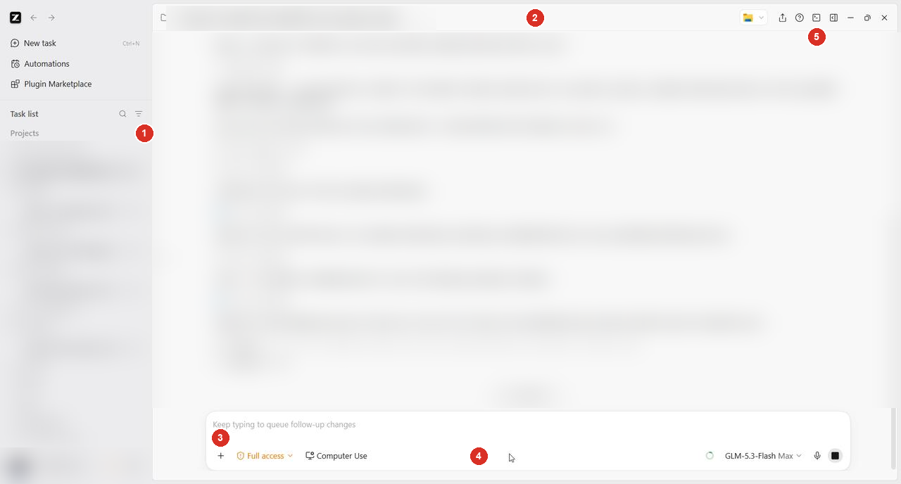
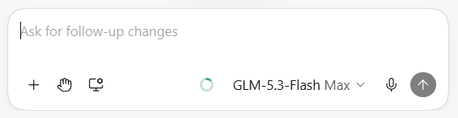
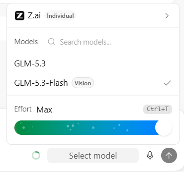
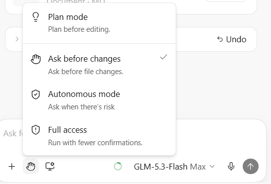
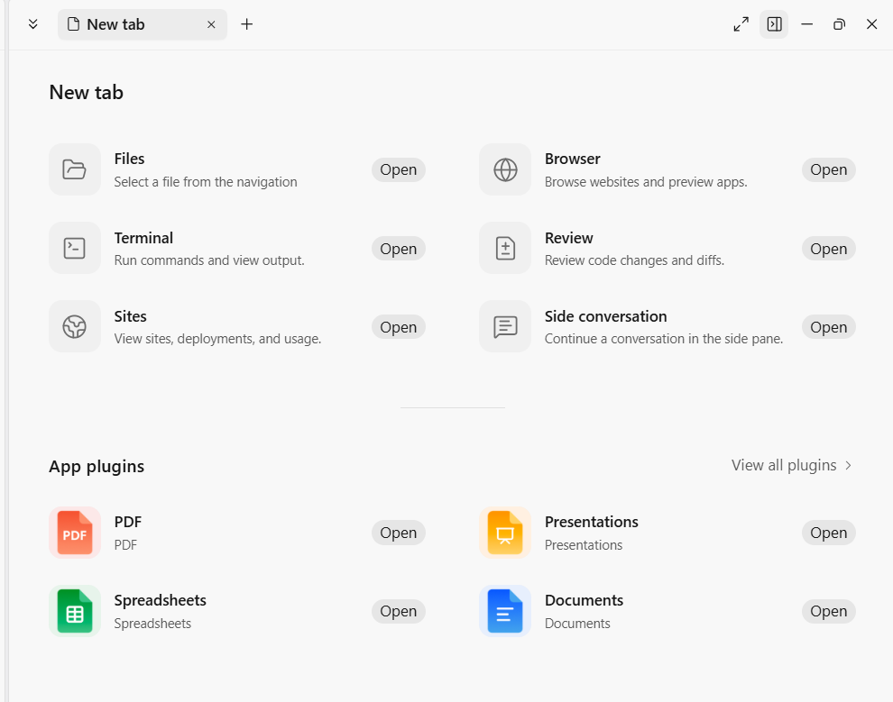

เครื่องมือ · อ่านก่อน Lab 1
ZCode เบื้องต้น
ZCode คือ AI coding agent (AI ที่ลงมือเขียนและแก้โค้ดให้เองได้) แบบโปรแกรมที่ติดตั้งบนเครื่อง ของ Z.ai — เราพิมพ์บอกงานเป็นภาษาพูดทั่วไป แล้วมันอ่านโค้ด วางแผน แก้ไฟล์ และขอรันคำสั่งให้ หน้านี้อธิบายว่ามันคืออะไร ใช้อย่างไร และตั้งค่าอย่างไรให้ตรงกติกาของวันนี้: agent แก้ไฟล์ได้ แต่คำสั่ง Cloudflare / npm / git คนพิมพ์เอง
Gemini / ChatGPT ใน Lab 2 ตอบเป็นข้อความ ให้เราเอาไปใช้ต่อเอง ส่วน ZCode ลงมือในโฟลเดอร์โปรเจกต์ได้จริง — เปิดไฟล์ แก้ไฟล์ สร้างไฟล์ และขอรันคำสั่งใน terminal จึงทำงานได้เร็ว แต่ถ้าผิดพลาดก็สร้างความเสียหายได้เร็วเช่นกัน หน้าที่ของคนคือ กำหนดงาน อนุญาต/ปฏิเสธ และตรวจผล
ZCode คืออะไร
- Agentic Development Environment (โปรแกรมสำหรับทำงานร่วมกับ agent) — โปรแกรมเดสก์ท็อปที่เน้นคุยกับ agent ไม่ได้เป็น code editor แบบ VS Code (วันนี้เราใช้ VS Code อ่านโค้ด และ Git Bash รันคำสั่ง)
- เป็นโปรแกรมทางการที่ Z.ai ทำไว้ให้ใช้งานโมเดล AI ชื่อ GLM ของตัวเอง และเปิดซอร์สโค้ดให้ทุกคนดูได้ (open source, Apache-2.0)
- ทำงานวนเป็นรอบ เรียกว่า agent loop: อ่านข้อมูลที่มีอยู่ตอนนั้น (context = คำสั่งของเรา ไฟล์ที่อ่าน และบทสนทนาก่อนหน้า) แล้ววางแผน ใช้เครื่องมือ (อ่าน/แก้ไฟล์, ขอรันคำสั่ง) ดูผลที่ได้ แล้ววนทำต่อจนงานเสร็จ — ทุกรอบใช้ token (หน่วยนับข้อความที่ AI อ่าน/เขียน ซึ่งหักจากโควต้า)
- ติดตั้งไว้บนเครื่อง Lab แล้ว ผู้เรียนแค่ล็อกอินด้วยบัญชี Z.ai ของตัวเอง (setup · PART C)
หน้าจอ ZCode

| # | ส่วน | ใช้ทำอะไร |
|---|---|---|
| 1 | แถบซ้าย | New task (Ctrl+N) สร้างงานใหม่ · Projects คือโฟลเดอร์งาน ใต้แต่ละโปรเจกต์คือ task (1 task = 1 บทสนทนา) ปักหมุดหรือเก็บถาวรได้ · ล่างสุดคือโปรไฟล์ผู้ใช้ (log out ก่อนกลับ) และ ⚙ Settings · ส่วน Automations และ Plugin Marketplace วันนี้ไม่ใช้ |
| 2 | บทสนทนา | เห็นแผน การเรียกเครื่องมือ (เช่น Explored, Ran 1 command, Skill) คำขออนุญาต และสรุปไฟล์ที่เปลี่ยนท้ายแต่ละคำตอบ — อ่านทุกครั้ง แล้วยืนยันด้วย git diff |
| 3 | ช่องพิมพ์ + ปุ่ม + | พิมพ์งานเป็นภาษาพูดทั่วไป เช่น ทำ task T1.1 ใน TASKS.md · ปุ่ม + แนบไฟล์ · @ อ้างไฟล์/โฟลเดอร์ · # อ้างบทสนทนาเก่า · / คำสั่ง · $ เรียก skill (ชุดขั้นตอนสำเร็จรูปที่บันทึกไว้) |
| 4 | โหมด · Computer Use · โมเดล | ใต้ช่องพิมพ์ด้านซ้าย มีปุ่มโหมด (ไอคอนเปลี่ยนตามโหมด เช่น ✋ คือ Ask before changes กดเพื่อเลือก หรือใช้ Shift+Tab) และ Computer Use (ไอคอนจอ) ซึ่งให้ agent ควบคุมหน้าจอเครื่องเรา วันนี้ไม่เปิด
ด้านขวาคือโมเดล GLM-5.3-Flash Max (คำท้าย Max คือระดับการคิด) กดเปลี่ยนเป็น GLM-5.3 เมื่อ task ยาก · วงกลมเล็กข้างชื่อโมเดลบอกว่า task นี้ใช้พื้นที่ความจำ (context) ไปแล้วเท่าไร |
| 5 | ปุ่ม terminal | มุมขวาบนมี 4 ปุ่ม: เปิดโฟลเดอร์ใน Explorer · แชร์ · ช่วยเหลือ · terminal (หน้าต่างพิมพ์คำสั่ง ไอคอน >_) — terminal นี้วันนี้ไม่ใช้ คำสั่ง wrangler / npm / git ให้พิมพ์เองใน Git Bash เสมอ |
ยิ่งวงกลมเต็ม แปลว่า task นี้สะสมข้อความไว้มาก และทุกรอบที่ agent คิดต้องอ่านข้อความทั้งหมดนั้นซ้ำ จึงเปลือง token มากขึ้นเรื่อย ๆ — ถ้าวงกลมเต็มเกินครึ่งแล้วงานยังไม่จบ ให้เริ่ม task ใหม่
เริ่มงาน: โปรเจกต์ และ task ใหม่
เปิดโฟลเดอร์โปรเจกต์
เพิ่มโปรเจกต์จากแถบซ้าย แล้วเลือกโฟลเดอร์งาน — Lab 1a ใช้ hello-vibe · Lab 3 ใช้ my-app
ต้องเป็นโฟลเดอร์ที่ถูก เพราะ agent อ่าน/แก้ได้เฉพาะในโปรเจกต์นี้ และอ่าน AGENTS.md ที่รากโฟลเดอร์
สร้าง task ใหม่ คือเริ่มบทสนทนาใหม่ที่ไม่มีข้อความเก่า
กด New task ที่แถบซ้าย (หรือ Ctrl+N) agent จำข้าม task ไม่ได้ มันรู้แค่สิ่งที่อยู่ใน context ของ task นั้น ถ้า task ยาว ทุกรอบมันต้องอ่านข้อความเก่าซ้ำ จึงเปลือง token กติกา: เริ่ม task ใหม่เมื่อขึ้น lab ใหม่ หรือเมื่อบทสนทนายาวจนวกวน
เลือกโมเดล และตรวจโหมด
ใต้ช่องพิมพ์: ปุ่มที่ 2 จากซ้ายต้องเป็นไอคอนมือ ✋ (โหมด Ask before changes) และโมเดลเป็น GLM-5.3-Flash

+ · ✋ โหมด Ask before changes · 🖥 Computer Use (ไม่เปิด) · วงกลม context · โมเดลโมเดลและโควต้า
| โมเดล | จุดเด่น | วันนี้ใช้เมื่อ |
|---|---|---|
| GLM-5.3 | เก่งที่สุด รับข้อความได้ยาวมาก (context 1M token) แต่ใช้โควต้ามากกว่า | task ยาก เช่น T2.1 กติกาการจองทั้งหมด หรือเมื่อ Flash แก้ไม่ผ่าน |
| GLM-5.3-Flash Vision | เร็ว ประหยัด และอ่านรูปภาพได้ | ค่าเริ่มต้นของ Lab 1a และ Lab 3 |

ตั้ง Effort สูง agent จะคิดนานและละเอียดก่อนตอบ ได้ผลดีขึ้นกับงานยาก แต่ใช้เวลาและ token มากขึ้น งานเล็ก (แก้ข้อความ ปรับหน้าเว็บ) ลด Effort ลงได้ ส่วนงานที่มีกติกาเยอะ (T2.1) ให้คงไว้ที่ Max
หน้า Usage Stats ในโปรแกรมแสดงโควต้าและการใช้แยกตามโมเดล — เปิดดูก่อนและหลังแต่ละ lab เอกสารทางการระบุว่าบัญชีทดลองได้ 5 วัน วันละ 5M token (GLM-5.3 3M + โมเดลรอง 2M) ใช้ได้เฉพาะช่วง 5 วันนั้น — ตรวจตัวเลขจริงของบัญชีตัวเองในหน้า Usage Stats เพราะเงื่อนไขอาจเปลี่ยน
โหมดการทำงาน 4 แบบ
กดปุ่มโหมดใต้ช่องพิมพ์ (หรือ Shift+Tab) — โหมดคือ “agent ทำเองได้แค่ไหนก่อนต้องถามเรา”

| โหมด | พฤติกรรม | วันนี้ |
|---|---|---|
| 💡 Plan mode | Plan before editing — วางแผนก่อน แล้วรอเรายืนยันจึงลงมือ | ✅ ใช้ได้กับ task ใหญ่ เช่น T2.1 — อ่านแผนเทียบกับ AC ก่อนให้ทำ |
| ✋ Ask before changes (ค่าเริ่มต้น) | Ask before file changes — ถามก่อนแก้ไฟล์และก่อนรันคำสั่ง | ✅ ใช้โหมดนี้ — เห็นทุกการเปลี่ยนแปลงก่อนเกิดขึ้นจริง |
| 🛡 Autonomous mode | Ask when there’s risk — ทำเองเป็นส่วนใหญ่ ถามเฉพาะเมื่อโปรแกรมประเมินว่าเสี่ยง | ⚠ วันนี้ไม่ใช้ — โปรแกรมเป็นคนตัดสินว่าอะไรเสี่ยง ไม่ใช่เรา |
| ❗ Full access | Run with fewer confirmations — ถามน้อยที่สุด | ❌ ห้ามใช้ — agent อาจรัน deploy / migration / git แทนคนได้ |
เมื่อ ZCode ขออนุญาต: กดอะไร
ในโหมด Ask before changes ทุกการแก้ไฟล์และทุกคำสั่งจะขึ้นกล่องให้เลือก Allow · Always Allow · Reject · Always Reject (บางกล่องมี “Allow for this session” / “Always allow for this project”)
| agent ขอ… | กด | เหตุผล |
|---|---|---|
แก้/สร้างไฟล์ ใน src/ public/ migrations/ ที่ task สั่ง | Allow (อ่านชื่อไฟล์ก่อน) | เป็นงานของ agent |
แก้ไฟล์ที่ task ไม่ได้สั่ง เช่น SPEC.md wrangler.jsonc package.json | Reject แล้วถามเหตุผล | agent ทำเกินที่ task สั่ง ทั้งเสี่ยงและเปลือง token |
รัน wrangler · npx · npm · git | Reject แล้วพิมพ์เองใน Git Bash | คำสั่งเหล่านี้กระทบระบบจริงและย้อนกลับได้ยาก — กติกาข้อ 1 ของวัน |
| อ่านไฟล์ / ค้นหาในโปรเจกต์ | Allow | ไม่เปลี่ยนอะไร |
“Always Allow” ทำให้ครั้งต่อไป agent รันคำสั่งแบบเดียวกันได้โดยไม่ถาม — บนเครื่องส่วนกลางยิ่งอันตราย
เพราะคนที่ใช้เครื่องต่ออาจได้สิทธิ์นั้นไปด้วย ไฟล์ AGENTS.md (ไฟล์กติกาที่ agent อ่านทุกครั้ง) ของ starter (โปรเจกต์ตั้งต้นที่ผู้สอนเตรียมให้) เขียนห้าม agent รันคำสั่งไว้แล้ว
ถ้ายังขอรันคำสั่ง แสดงว่า agent ทำผิดกติกา ให้กด Reject
บอกบริบทให้ ZCode
| ช่องทาง | ZCode ใช้อย่างไร | วันนี้ |
|---|---|---|
AGENTS.md ที่รากโปรเจกต์ | อ่านอัตโนมัติทุกครั้งที่เริ่ม task (รวมกับ ~/.zcode/AGENTS.md ของผู้ใช้ ถ้ามี โดยไฟล์ของโปรเจกต์เป็นหลัก) | มากับ starter: กติกา ทำทีละ task ห้ามรันคำสั่ง ถามก่อนเดา |
@ไฟล์ | แนบไฟล์หรือโฟลเดอร์ให้ agent อ่าน (เพิ่มเข้า context) | ปกติไม่ต้อง — AGENTS.md บอกให้อ่าน SPEC/TASKS เอง |
$skill | เรียก skill (ขั้นตอนมาตรฐานของงานที่ทำซ้ำ) | ดู ทฤษฎี 3 |
/คำสั่ง | ข้อความสั่งงาน (prompt) ที่บันทึกไว้ และคำสั่งของโปรแกรม | ไม่จำเป็น |
CLAUDE.md | ไม่อ่านระหว่างทำงาน | starter จึงใช้ AGENTS.md |
prompt ที่ดีของวันนี้จึงสั้นมาก เพราะบริบทอยู่ในไฟล์แล้ว:
ทำ task T1.1 ใน TASKS.mdตรวจผล และย้อนกลับ
- ท้ายแต่ละคำตอบมี สรุปไฟล์ที่เปลี่ยน — อ่านทุกครั้ง แล้วดูรายละเอียดด้วย
git diffใน Git Bash หรือ VS Code - ใน ZCode เองก็ดู diff ได้: เปิดแผงด้านขวา → แท็บใหม่ → Review (Review code changes and diffs) เห็นทีละบรรทัดว่าเพิ่ม/ลบอะไร
- ปุ่ม Undo ของ ZCode ย้อนไฟล์ที่ agent แก้ในคำตอบนั้นได้ (ย้อนทั้งชุด ไม่เลือกทีละไฟล์) และกด Reapply คืนได้
- แก้ข้อความล่าสุดที่ส่งไป แล้วเลือก Reset chat + files โปรแกรมจะย้อนไฟล์ที่แก้ในรอบนั้นกลับก่อน แล้วจึงส่งข้อความใหม่
- สิ่งที่เกิดจากคำสั่งใน terminal ย้อนด้วย Undo ไม่ได้ — นี่เป็นอีกเหตุผลที่ให้คนรันคำสั่งเอง

ทุกครั้งที่ task ผ่าน ให้ commit (บันทึกสถานะของโค้ดไว้) ถ้า agent ทำผิดหรือทำเกิน task ให้ใช้ git restore . (ทิ้งการแก้ที่ยังไม่ commit) แล้วสั่งใหม่ให้ชัดขึ้น
ขั้นตอนการใช้ ZCode ใน Lab 3
ทำ task Tx.y ใน TASKS.mdgit diffnpm run smokeถ้าขั้น 4 ไม่ผ่าน: คัดลอกเฉพาะบรรทัดที่ FAIL ไปบอก ZCode ใน task เดิม (อย่าวาง log ทั้งหน้า — เปลือง token)
ปัญหาที่พบบ่อย
| อาการ | ทำอย่างไร |
|---|---|
| ZCode ล็อกอินเป็นบัญชีคนอื่นค้างอยู่ | ออกจากระบบ แล้วล็อกอินบัญชี Z.ai ของตัวเอง — ไม่งั้นใช้โควต้าของคนอื่น |
agent ขอรัน npm install / wrangler … | Reject แล้วรันเองใน Git Bash จากนั้นบอกมันว่า “รันให้แล้ว ผลคือ …” |
| agent แก้หลายไฟล์เกิน task | Undo หรือ git restore . แล้วสั่งใหม่: “ทำเฉพาะ T1.1 แก้แค่ src/routes/cars.ts กับ migrations/” |
| คุยไปนานแล้ววกวน ตอบช้า | เริ่ม task ใหม่ — ได้บทสนทนาใหม่ที่ไม่มีข้อความเก่า และ agent จะอ่าน AGENTS.md ใหม่ |
| Flash แก้ซ้ำ 2 รอบยังไม่ผ่าน | สลับเป็น GLM-5.3 สำหรับ task นั้น แล้วกลับมา Flash |
| โควต้าใกล้หมด | แจ้งผู้สอน — ใช้โค้ดที่ผู้สอนเตรียมไว้ถึงจุดนั้น (checkpoint) แทนการให้ agent เขียนต่อ |
ZCode → ออกจากระบบ (log out) ทุกครั้ง เพราะเครื่อง Lab เป็นของส่วนกลาง (PART D)
ข้อมูลหน้าจอ โหมด และการอนุญาต อ้างอิงเอกสารทางการ zcode.z.ai/en/docs (พฤศจิกายน 2569) — ชื่อปุ่มอาจเปลี่ยนตามเวอร์ชัน